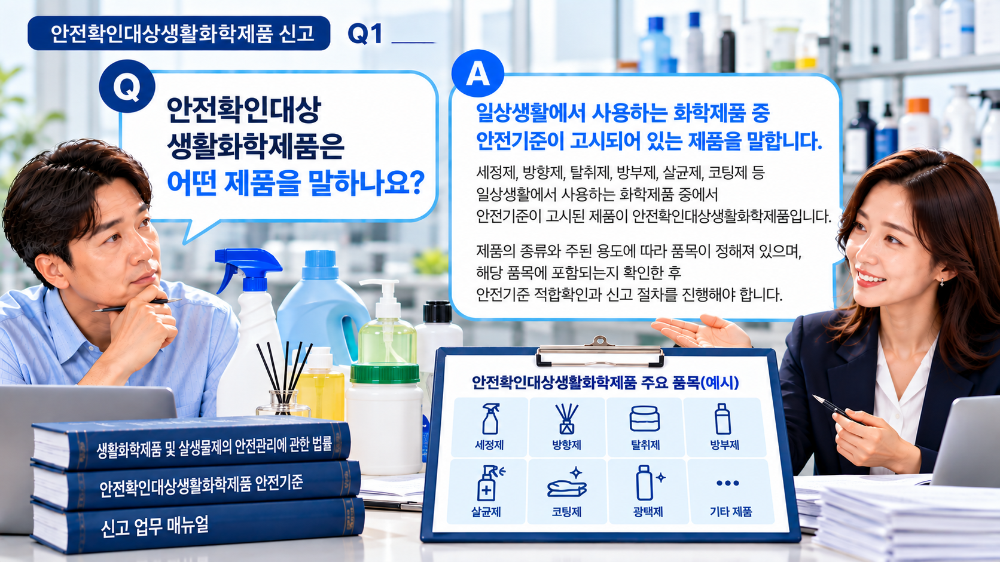
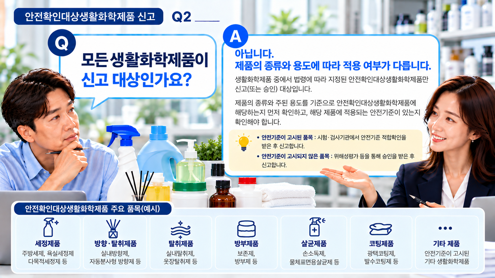
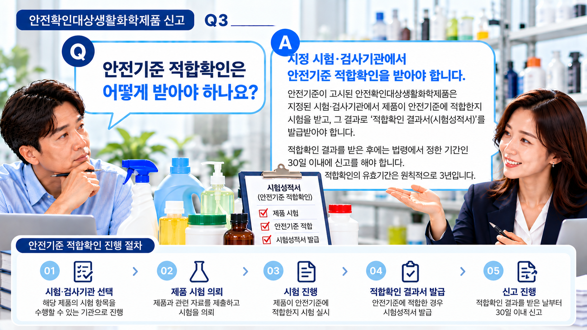

01. 안전확인대상생활화학제품이란?
일상적인 생활공간에서 사용하는 화학제품 중 위해성평가 결과에 따라 안전관리가 필요하여 법령에 따라 지정·고시된 생활화학제품을 말합니다.
제품의 종류와 주된 용도에 따라 품목이 구분되므로, 제품을 제조하거나 수입하기 전에 해당 제품이 어느 품목에 해당하는지 확인해야 합니다.
제품명만으로 판단하지 않습니다.
비슷한 형태의 제품이라도 실제 용도와 사용방법 등에 따라 적용되는 품목이나 기준이 달라질 수 있으므로 제품의 실질적인 용도를 함께 확인하는 것이 중요합니다.

02. 먼저 대상 품목인지 확인합니다.
안전확인대상생활화학제품에는 세정제품, 세탁제품, 코팅제품, 접착·접합제품, 방향·탈취제품, 살균제품 등 여러 종류의 품목이 포함됩니다.
따라서 생활화학제품을 제조하거나 수입하려는 경우 단순히 제품의 명칭만 보는 것이 아니라 제품의 종류와 주된 용도를 기준으로 적용되는 품목을 검토해야 합니다.
03. 안전기준 적합확인이 필요합니다.
안전기준이 고시된 안전확인대상생활화학제품을 제조하거나 수입하려는 경우에는 지정된 시험·검사기관에서 해당 제품이 안전기준에 적합한지 확인을 받아야 합니다.
제품의 품목·용도·제형과 함유성분 등에 따라 확인해야 하는 시험항목과 준비자료가 달라질 수 있습니다.

04. 신고를 위해 확인하는 주요 자료
안전기준 적합확인 이후 신고를 진행하려면 제품에 관한 기본정보와 성분자료 등을 준비해야 합니다.
| 구분 | 주요 확인내용 |
|---|---|
| 제품정보 | 제품명·품목·용도·제형 등 |
| 성분정보 | 함유성분·배합비율·용도 등 |
| 적합확인 | 안전기준 적합확인 결과 |
| 제품자료 | 제품사진·설명서 등 |
| 표시사항 | 제품에 적용할 표시내용 및 표시견본 |
제품의 특성에 따라 추가 확인자료가 필요할 수 있으므로 실제 제품과 보유자료를 기준으로 준비사항을 확인하는 것이 좋습니다.
05. 적합확인 후 신고 절차를 진행합니다.
시험·검사기관으로부터 안전기준 적합확인 결과를 받은 후에는 정해진 기간 내에 신고 절차를 진행해야 합니다.
적합확인 결과를 받은 날부터 30일 이내에 신고해야 하므로 시험 결과를 받은 이후 신고자료 준비를 늦추지 않는 것이 중요합니다.

06. 적합확인은 3년마다 다시 확인합니다.
안전기준 적합확인은 한 번 받으면 계속 유지되는 것이 아니라 원칙적으로 3년의 유효기간이 적용됩니다.
유효기간 이후에도 계속 해당 제품을 제조하거나 수입하려는 경우에는 적합확인 및 갱신에 필요한 절차를 미리 확인하는 것이 좋습니다.
07. 표시사항도 함께 확인해야 합니다.
신고를 완료하는 것만으로 준비가 끝나는 것은 아닙니다. 실제 제품을 제조·수입하여 유통하려면 해당 제품에 적용되는 표시기준도 함께 확인해야 합니다.
제품에 표시되는 정보와 신고한 내용이 서로 맞는지, 사용방법과 사용상 주의사항 등이 적절하게 반영되었는지도 확인할 필요가 있습니다.
08. 신고 후 제품정보가 변경되었다면?
신고 이후 제품의 성분이나 배합비율, 제품명 또는 그 밖의 신고사항에 변경이 생기는 경우에는 변경내용에 따라 추가적인 확인이나 변경신고가 필요한지 검토해야 합니다.
따라서 기존 신고제품과 비슷하다는 이유만으로 별도 확인 없이 제조·수입하기보다는 실제 변경내용을 기준으로 절차를 확인하는 것이 안전합니다.
09. 실무에서 자주 놓치는 부분
- 생활화학제품이라고 해서 모두 같은 신고절차가 적용되는 것은 아닙니다.
- 제품명만으로 판단하지 말고 실제 종류와 주된 용도를 확인합니다.
- 제품에 함유된 성분과 배합비율을 확인할 수 있는 자료를 확보합니다.
- 제품의 품목과 특성에 맞는 안전기준 적합확인이 이루어졌는지 확인합니다.
- 적합확인 결과를 받은 뒤 신고기한을 놓치지 않도록 주의합니다.
- 신고내용과 실제 제품의 표시사항이 서로 일치하는지도 확인합니다.
안전확인대상생활화학제품 신고를 준비하고 계신가요?
제조·수입하려는 제품의 종류와 용도, 성분자료 및 현재 보유하고 있는 자료를 기준으로 필요한 준비사항을 먼저 확인해 보세요.